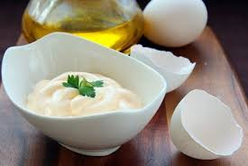

Майонез «Домашний»
Если вы никогда не делали домашний майонез, обязательно попробуйте, результат вас порадует. Главное не торопиться и сделать все по инструкции. Важный момент — все используемые продукты должны быть комнатной температуры.
Ингридиенты:

3 желтка
150 мл растительного масла (я использую оливковое)
1 ч.л. горчицы (пасты)
5 ч.л. лимонного сока
0.5 ч.л. сахара
0.5 ч.л. соли
Приготовление
Желтки взбить с горчицей, сахаром и солью.
Аккуратно, буквально по чайной ложке, добавить масло, не прекращая взбивать.
Когда масса станет однородной, можно смело добавить все масло, хорошо взбить.
Добавить сок лимона, массу еще раз взбить.
Если майонез покажется слишком густым, можно добавить немного холодной кипяченой воды.